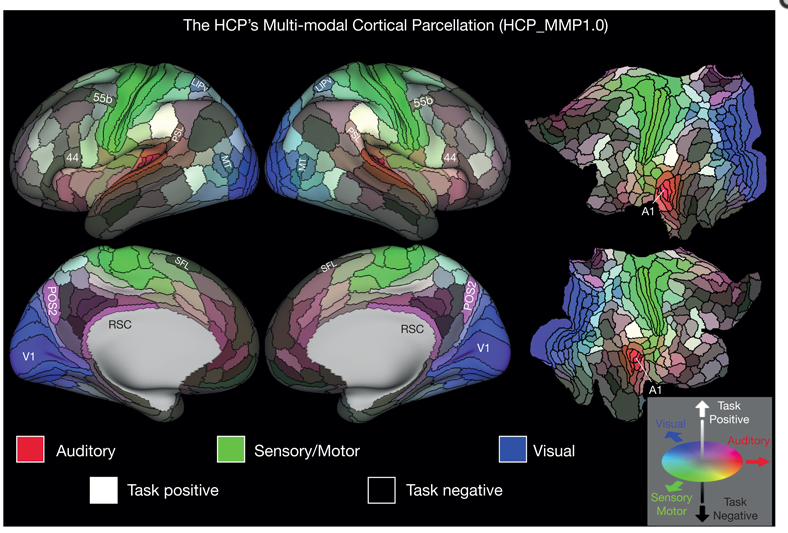
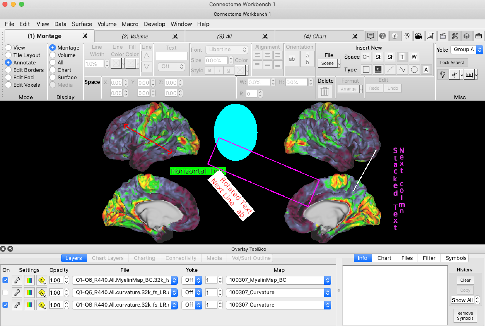
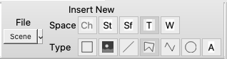
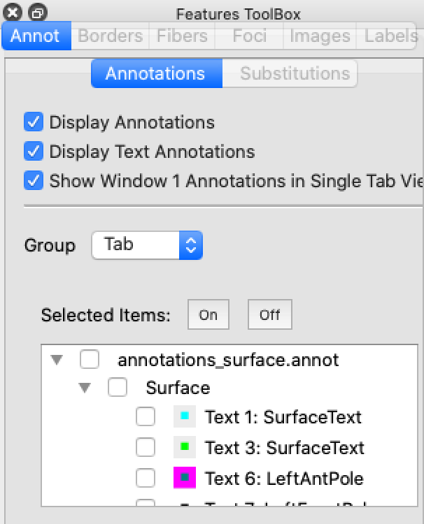
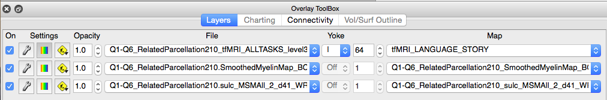

Guide to WB Annotations 1.5.01
23 March 2021
Table of Contents
Annotation Toolbar and Example Annotations
Stereotaxic Coordinate Space (St)
Annotation Line Width, Line Color, and Fill Color
Annotation Text Alignment Property
Annotation Coordinate Property
Editing Annotation Position, Size, and Rotation
Editing Polylines and Polygons
Context Sensitive (Pop-up) Menu
Display Control of Annotations
Selection of Annotations in Features Toolbox
Content of Annotations Tab in Features Toolbox
Mouse Selection of Annotations

Figure 1: Single Tab View

Figure 2: Tile Tabs View
Understanding the Need for Locking the Aspect Ratio
To create an optimal view of a brain model, the user may adjust the size of the window and optionally remove the Toolbar, Overlay Toolbox, and the Features Toolbox. As the window’s shape changes, the size of displayed brain model is adjusted to best fill the available space. For a cerebral cortex model in a default lateral view, the height of the cortex is set to be slightly smaller than the height of its available area in the window. If this causes parts of the cortex to exceed the width of the available are, the cortex is shrunk so that all of it is visible.
Allowing an independent width and height for the window is known as a variable aspect ratio. An aspect ratio is the ratio of height to width (height divided by width). Due to this variable aspect ratio, annotations in Tab and Window Coordinate Space use a special two-dimensional coordinate system consisting of percentages. In this percentage coordinate system, the range for X-percentage coordinates range from 0% at the left edge of the graphics region to 100% at the right edge. Correspondingly, Y-percentage coordinates range from 0% at the bottom edge to 100% at the top edge. Thus, if one places an annotation at an X-coordinate of 100%, this annotation will always be at the right edge of the window, regardless of the window’s width.
While this percentage coordinate system works well with a variable aspect ratio, it has a major shortcoming. If one places an annotation in Tab or Window Space over an anatomical feature of brain model and increases the width (or height) of the window, the annotation may “drift” and no longer hover above the anatomical feature. This anomaly occurs because the size of the brain model does not increase in the same proportion as the size of the window. To correct this problem, wb_view provides (and strongly recommends) locking of the aspect ratio. When aspect locking is enabled, the aspect ratio at the time of locking is saved and used when drawing brain models. If the window is changed to a size that does not result in the same aspect ratio as the locked aspect ratio, padding is added to the horizontal or vertical sides of the window to limit the graphics region in a way that matches the locked aspect ratio. For example, suppose one creates two annotations in tab coordinate space, a red oval and a fuchsia box as in Figure 1. Now suppose one increases the width of the window while the aspect ratio is unlocked. Notice that the annotations are no longer hover over the original anatomical regions, Figure 4. However, if one locks the aspect ratio and then increases the width of the window, padding is added to the side of the window to restrict the model to an area with the aspect ratio from the time of locking, Figure 5.

Figure 3: Annotations on Surface

Figure 4: Width Increased with Unlocked Aspect Ratio

Figure 5: Width increased with a Locked Aspect Ratio
Scenes
Scenes allow one to preserve and reproduce ‘the state’ of wb_view and are frequently used to produce figures for publications. Scenes can be shared with collaborators or with the neuroscience community through the BALSA Database. Annotations are frequently featured in scenes and allow one to highlight items of in the data and present auxiliary information (Figure 6). Annotations are typically saved within a scene which eliminates the management of an external data file (although annotations may be stored in external data files).

Figure 6: Figure from A multimodal parcellation of human cerebral cortex (Glasser et al)
Annotation Toolbar and Example Annotations

Figure 7: Window with Annotation ToolBar
Annotation Coordinate Spaces
Several coordinate spaces are available for annotations. The coordinate spaces control the movement of placement of annotations.
Chart Data Space (Ch)
An annotation in chart data space is displayed within the char data plot and is invalid outside of the data plot. The coordinate range is identical to the X- and Y-axis of the displayed chart data. This is the range of data in the chart changes, an annotation in chart data space will move.
Stereotaxic Coordinate Space (St)
An annotation in stereotaxic space will appear in any display of a surface or a volume. A particular annotation in stereotaxic space may appear in more than one location such as when viewing a surface montage.
Stereotaxic space (Talairach is an example of a specific stereotaxic space) is the three-dimensional coordinate system in which surface and volume models are displayed. In Workbench, the stereotaxic space is in an LPI orientation (negative X is Left, negative Y is Posterior, and negative Z is Inferior). Annotations in Stereotaxic Space will follow the model as it is panned, rotated, or zoomed. At times, annotations in Stereotaxic Space may not be visible when they are behind a model. Annotations in Stereotaxic Space are always drawn in a plane parallel to the screen.
Surface Coordinate Space (Sf)
An annotation in surface coordinate space will appear in any view of the surface to which the annotation is attached. When a surface space is used, the annotation is associated with a surface by the combination of the surface’s structure (ie: left cerebral cortex) and a vertex index. An optional offset vector is used to improve visibility of the annotation (so not ‘behind’ the surface).
Tab Coordinate Space (T)
An annotation in tab coordinate space is displayed in a specific tab (uses tab number). When Tile Tabs is enabled, all of the window’s tabs are displayed in a grid-like pattern. Tab Coordinate Space is a two-dimensional space with the X- and Y-coordinates expressed in percentages ranging from 0% to 100%. For the X-coordinate, 0% is on the left and 100% is on the right. For the Y-coordinate, 0% is at the bottom and 100% is at the top.
If Tile Tabs is enabled, the coordinate range spans only cell allocation to that tab in the graphics region. When the tab’s aspect is locked, the locations of 0% and 100% may be offset from the graphics regions edges so that annotations remain at a consistent location over an underlying brain model.
Window Coordinate Space (W)
The window coordinate functions nearly identically to the tab coordinate space except that the coordinates always span the entire graphics region. Tile Tabs has no effect on window coordinates.
Aspect Locking for Tab and Window Coordinate Spaces
The graphics region in wb_view defaults to a variable aspect ratio. With a variable aspect ratio, the user may independently adjust the width and height of the window. Since the tab and window coordinate spaces use a percentage coordinate system, annotations in these spaces will move away from the center as the width or height is increased. Conversely, the annotation will move towards the center as the width or height is decreased. For example, in Figure 8, a red oval and a fuchsia square annotation are displayed over a left hemisphere. In one stretches the width of the window with an unlocked aspect ratio, the two annotations move away from the center but remain at the same percentage width coordinate, Figure 9. In contrast, if one locks the aspect ratio and expands the width of the window, padding is added to the sides so that the percentage coordinates remain limited to the original aspect ratio, Figure 10. The result of aspect locking is that the annotations remain over the same anatomical features as the window’s size changes.
Figure 8: Surface with Annotations
Figure 9: Window Width Increased with Unlocked Aspect Ratio
Figure 10: Window Width Increased After Locking Aspect Ratio
Types of Annotations
Box
A box annotation is positioned with one coordinate located at the center of the box. The box’s width and height are ‘normalized’ relative to the size of width and height of the tab or window containing the box. Thus, a size of 100% will fill the tab/window horizontally. Boxes possess both Fill and Line colors and one or both may be used.
Color Bars
Color bars are a special case of annotations that pictorially describe the mapping of numeric data into a color palette. Color bars are not created like other annotation types but are enabled for display by pressing the color bar button for a row in the Overlay ToolBox’s Layers tab. Positioning of color bars is performed automatically unless the user chooses to manually position them. Color bars are limited to Tab and Window spaces. Editing of color bars is described at the end of this document.
Image
An image annotation is positioned with one coordinate located at the center of the image. The height of image is specified as a percentage of the region containing the image. As the region changes in height, a corresponding change will occur in the height of the image. The width of the image will scale with the height of the image using the aspect ratio of the image when it was associated with the orientation.
Line
A line annotation contains two coordinates with one located at each end point. Lines are colored using the Line Color only. Arrows may be added to each of the end points.
Polyline
A polyline consists of a connected sequence of line segments. Polylines are colored using the Line Color only.
Polygon
A polygon consists of a connected sequence of line segments with the last coordinate connected to the first coordinate to form a closed shape. Polygons are colored using the Line Color only.
Oval
With the exception of the its shape, an oval’s functionality is identical to a box.
Text
Text annotations contain one coordinate and the text alignment properties control the offset of the text relative to the coordinate. Text characters are drawn in the Font Color. The Line color, if enabled, draws a box around the text. The File color, if enabled, draws a background behind the text. The height of text is specified as a percentage of the region’s height containing the text. As the region changes in height, a corresponding change will occur in the size of the text.
Annotation Properties
|
Property |
Box |
Color Bar |
Image |
Line |
Polyline and Polygon |
Oval |
Text |
|
Arrow Tips |
|
|
|
Y |
|
|
|
|
Line Width |
Y |
|
|
Y |
Y |
Y |
Y |
|
Line Color |
Y |
|
|
Y |
Y |
Y |
Y |
|
Fill Color |
Y |
Y |
|
|
|
Y |
Y |
|
Text Color |
|
Y |
|
|
|
|
Y |
|
Text Characters |
|
Y |
|
|
|
|
Y |
|
Font Name |
|
Y |
|
|
|
|
Y |
|
Font Size |
|
Y |
|
|
|
|
Y |
|
Font Style |
|
|
|
|
|
|
Y |
|
Horizontal Alignment |
|
|
|
|
|
|
Y |
|
Vertical Alignment |
|
|
|
|
|
|
Y |
|
Orientation |
|
|
|
|
|
|
Y |
|
Width |
Y |
Y |
Y |
|
|
Y |
|
|
Height |
Y |
Y |
Y |
|
|
Y |
|
|
Rotation |
Y |
Y |
Y |
Y |
|
Y |
Y |
Annotation Line Width, Line Color, and Fill Color
The Line Width Property controls the line width of Line and Polyline annotations and the outline width of Box, Oval, and Text annotations. Line widths are expressed as a percentage of the height of the region containing the annotation. When multiple annotations are selected with different line widths, the smallest selected line width is displayed followed by a plus symbol (+).
The Line Color Property controls the outline color of a Box, Oval or Text. To change the color, one presses the small arrow to display a menu containing the available colors. The two special selections are Custom and None. Choosing Custom displays a dialog that allow the user to create a color by adjusting red, green, and blue color components. None inhibits the drawing of the associated line.
The Fill Color Property controls the background color for a Box, Oval, or Text annotation and its functionality is the same as the Line Color property.

Figure 11: Line Width and Line/Fill Color Controls
Annotation Line Arrow Tips

Figure 12: Line Arrow Tip Controls
The Annotation Line Arrow Tips section controls the addition of arrows to the end points of a line annotation. The top arrow button adds an arrow to the line’s start and the bottom arrow button adds an arrow to the line’s end.
Annotation Text Characters
The Text section allows the user to edit the text of the selected Text Annotation (when one and only one annotation is selected). Multiple lines of text are separated by a “\n” character sequence. The combo box in the second row allows the user to connect a text annotation in Surface Space to the surface vertex with a line or an arrow. When connecting a text annotation to the surface, the offset in the surface coordinate often needs adjustment. In addition, one may double-click the text annotation to edit the text in a multi-line editor.

Figure 13: Text Characters and Offset (Surface Space only) Controls
Annotation Text Font Property
Font Properties associated with Text Annotations include the Font Name, the Font Size, the Text Color and options for Bold, Italic, and Underline. When multiple annotations are selected, the first matching font and smallest font size is selected. The Bold, Italic, and Underline buttons are selected only if all selected text annotations have the attribute enabled.

Figure 14: Text Font Attributes
Annotation Text Alignment Property
Text Alignment Properties provide options for both horizontal (top row) and vertical alignment (bottom row) of text. Horizontal options allow left-aligned text, center-aligned text, or right-aligned text. Vertial options allow for top-aligned text, middle-aligned text, or bottom-aligned text.
When there are multiple text annotations selected with different alignments, none of the alignment buttons appear in selected state.

Figure 15: Text Alignment Controls
Annotation Text Orientation
The text orientation property includes two selections, Horizontal and Stacked. Text characters drawn in Horizontal Orientation are drawn in a left-to-right sequence. Text characters drawn in Stacked Orientation are drawn in a top-to-bottom sequence. If there are multiple text annotations selected with differing orientations, neither of the orientation buttons is shown as selected.

Figure 16: Text Orientation Controls
Annotation Coordinate Property
With the exception of Surface Space, the coordinates for annotations are specified with XYZ-coordinates. If the annotation is in Surface Space, selections are provided for the Structure, Vertex Index, Offset Mode (C or N), and Offset Distance. The Centroid (C) Offset Mode uses a vector from the centroid of the surface through the vertex. The Normal (N) Mode offsets using the vertex’s normal vector. Line annotations contain coordinates for each endpoint and all other annotations use a one coordinate.

Figure 17: Coordinate Controls (Chart, Stereotaxic, Tab, Window)

Figure 18: Surface Coordinate Controls
Located on the left side of the coordinate controls are alphanumeric characters that display an abbreviated name for the coordinate space of the selected annotation(s). If all of the selected annotations are in the same coordinate space, the letter will be Ch (Chart Data), Sf (Surface), St (Stereotaxic) T (Tab, followed by tab numbers), and W (Window). If multiple annotations are selected and they are in different coordinate spaces, a plus symbol (+) is displayed. The coordinate controls are enabled only when a single annotation is selected.
Annotation Width and Height
The Annotation Width and Height Properties control the width and height of Box, Image, and Oval Annotations. Both the width and height are normalized values that range from 0% to 100% where 100% is the full width/height of the tab or window. For image annotations, adjusting the width (or height) will also change the height (or width) of the image so that the image’s aspect ratio is preserved to prevent distortion of the image.

Figure 19: Width and Height Controls
Annotation Rotation Property
The Annotation Rotation property controls the rotation annotations. The rotation value is in degrees and a positive value rotates clockwise.


Annotation Files
There two mechanisms for saving annotations.
Disk Annotation File
Disk Annotation Files can be opened, saved, added to a Spec File just like other Workbench data files.
Scene Annotation File
The Scene Annotation File is maintained “in memory” and when the user creates a Scene, these annotations become part of the scene. Thus, these annotations can only be displayed when the scene is loaded. A special entry is provided on the Manage/Save Files Window to remove all active Scene Annotations.
Selecting Annotations
To select a single annotation while in Annotations mode, simply move the mouse over the annotation (the cursor will become a “four arrows” symbol) and click the mouse.
To select multiple annotations, hold down the Shift Key while clicking the mouse over an annotation. When the mouse is clicked with the Shift Key down, any other selected annotations remain selected.
If an annotation that is a member of a group is selected, all annotations in
the group become selected.
To deselect all annotations, click the mouse in a region where there is no annotation. If there are multiple annotations selected and one wants to deselect an annotation, click the mouse over the annotation while holding down the Shift Key.
When an annotation is in the selected state, sizing handles are displayed around the annotation. For a Line Annotation, sizing handle symbols are drawn at the end points with a slightly larger square symbol at the first coordinate (head of the arrow). For a Box or Oval Annotation, a box is drawn in the foreground color with sizing handles distributed about the box. When the mouse is moved over a sizing handle, the mouse cursor will change to a symbol that indicates how moving the size handle with the mouse will change the shape of the annotation.
Editing Annotation Position, Size, and Rotation
To move an annotation, first select the annotation and move the mouse over the annotation so that the cursor is the four arrows symbol. Hold down the left mouse button and then drag the mouse to move the annotation to its new location.
To resize a line annotation, first select the line annotation. Next, move the mouse over a sizing handle at either end of the line so that the cursor becomes a “two arrow” symbol. Now, hold down the left mouse button and drag the line end point to its new location.
To resize a box or oval annotation, first select the annotation. Next, move the mouse over one of the sizing symbols so that the cursor becomes a “two arrow” symbol. Now, hold down the left mouse button and drag to change the width and/or height of the shape. Dragging the circular symbol at the corners changes both the width and height of the shape. Dragging the square symbol on a side changes width or height but not both.

Figure 21: Box in Red that is Selected for Editing
To rotate a box, image, oval, or text annotation, first select the annotation. Next, move the mouse over the small rotation handle at the top of the shape (small black circle attached to box around TEXT) at which time the cursor will become a rotation symbol. Now, to rotate the annotation, hold down the left mouse button and drag the mouse away from the annotation to the desired orientation. The rotation handle will always point towards the mouse pointer so it is important that the mouse is moved away from the annotation. If the mouse is over the annotation, rotation will be erratic and difficult.
Annotations may also be moved, resized, and rotated using the annotation toolbar’s controls while a shape is selected.
Editing (Redo and Undo)

Figure 22: Editing Redo and Undo Controls
When editing annotations, the user may mistakenly modify or delete an annotation. For these instances, pressing the Undo button will “undo” the last change to an annotation. Redo and Undo can also be used with grouping operations (described later in this document).
Editing Polylines and Polygons
The coordinates in polylines and polygons support insert, move, and remove operations.
To edit an annotation of these types, move the mouse over a coordinate in the annotation. While the mouse is over a coordinate, the mouse symbol changes to a double arrow. To move the coordinate, hold the mouse button down and slowly drag the coordinate to its new location and then release the mouse.
To insert a new coordinate, move the mouse over a line segment in the annotation so that the mouse becomes a cross symbol. Right-click the mouse to display a pop-up menu and select Insert Polyline (Polygon) Coordinate. A new coordinate is inserted and highlighted with a symbol. Note that a coordinate cannot be inserted before the first coordinate or after the last coordinate in a polyline. A coordinate may be inserted between any pair of coordinates in a polygon.
To remove a coordinate, move the mouse over a vertex that becomes highlighted with a solid circle. Right-click the mouse to display a menu and select Remove Polyline (Polygon) Coordinate.
Inserting Annotations

Figure 23: Insert New Annotation Controls

Figure 24: Annotation File Selection Controls
When creating annotations, new annotations are placed in either “Scene Annotations” or an Annotation File stored to disk. Scene Annotations are not saved to an annotation file but instead are added to a scene when a new scene is created. Note that the user will need to save the scene file. Disk annotation files are saved and opened like other data files.
To create a new annotation, one must first choose the file that will contain the newly created annotation (the default is Scene Annotations). Once the file is selected, it is not necessary to select a file unless one wants to change the file. Second, the user must choose the Space from the top row of buttons (the selected space is highlighted). Third, the user must click one of the type buttons in the bottom row to choose the type of annotation that is created. Lastly, the user moves the mouse into the graphics region at which time the mouse pointer becomes a small ‘plus’ symbol. The user must either click the mouse in the graphics region to insert a default annotation for the type or drag the mouse to create a rectangular region that bounds the new annotation. If the location of the new annotation is incompatible with the selected annotation space, a dialog pops up that allows the user to choose a different space or to cancel creation of the annotation. When entering a text annotation, a dialog will always pop-up for entry of the text.
Drawing a polyline or a polygon is different than other annotations. For these types of annotations, the user may click the mouse to insert individual coordinates (vertices) or drag the mouse to insert continuous coordinates. Clicks work best for shapes with straight lines; dragging works best for curved shapes. Both clicks and drags may be mixed when drawing a polyline/polygon. To finish drawing, SHIFT-click the mouse (does NOT add another coordinate).
BEWARE that when drawing annotations in surface space, the annotation may move a short distance from where it was drawn. This is caused by the surface offset attribute of the surface coordinate. While the annotation is attached to the surface vertex closest to the mouse click, the annotation is offset by a vector. It is this offset vector that causes the annotation to move. Without the offset vector, surface annotations may be partially or even fully obscured by the surface.
Deleting Annotations

Figure 25: Delete Annotation Control
Individual annotations are deleted while in Annotation Mode by clicking the Trash Can Icon in the Annotation Toolbar. One may remove an entire file of Annotations on the Manage/Save Files window.
Format

Figure 26: Format Menu Items
The arrange menu is used to arrange and format multiple annotations. At least two annotations must be selected for an alignment operation. At least three annotations must be selected for a distribute operation. Alignment and Distribution operations may only be performed on annotations in Tab or Window space.
· Align Left – The selected annotations are moved so that the left edge of each annotation is at the same X-coordinate as the left-most annotation.
· Align Center – The selected annotations are moved so that center X-coordinate of each annotation is at the average X-coordinate of the annotations.
· Align Right – The selected annotations are moved so that the right edge of each annotation is at the same X-coordinate as the right-most annotation.
· Align Top - The selected annotations are moved so that the top edge of each annotation is at the same Y-coordinate as the top-most annotation.
· Align Middle – The selected annotations are moved so that the center Y-coordinate of each annotation is at the average Y-coordinate of the annotations.
· Align Bottom - The selected annotations are moved so that the bottom edge of each annotation is at the same Y-coordinate as the bottom-most annotation.
· Distribute Horizontally – The left-most and right-most annotations do not move. The other annotations are moved so there is equal horizontal spacing between adjacent annotations.
· Distribute Vertically - The top-most and bottom-most annotations do not move. The other annotations are moved so there is equal vertical spacing between adjacent annotations.
· Bring to Front – For overlapping annotations (must be in same space and in Chart, Tab or Window space). Moves the selected annotation so that it is in the top layer of any overlapping annotations.
· Bring Forward – Moves the selected annotation up one layer in the stack of overlapping annotations.
· Send to Back – Moves the selected annotation to the bottom layer of any overlapping annotations.
· Send Backward – Moves the object down one layer in the stack of overlapping annotations.
· Group - See the description in Annotation Grouping.
· Regroup - See the description in Annotation Grouping.
· Ungroup - See the description in Annotation Grouping.
Context Sensitive (Pop-up) Menu
A pop-up menu is available when the Mode (mouse) is Annotate. This menu is displayed when the user places the mouse over an annotation and right-clicks the mouse (Control key held down with mouse click on Mac). Items in the menu are enabled only in certain conditions.
Items in the pop-up menu are:
· Cut – Removes the annotation under the mouse and places it onto the annotation clipboard.
· Copy – Copies the annotation under the mouse and places it onto the annotation clipboard.
· Delete – Deletes the annotation under the mouse.
· Duplicate to Tab – When this item is enabled, it displays a menu listing the tabs to which the annotation may be pasted.
· Paste – Inserts a copy of the annotation on the clipboard at the mouse location. If the mouse location is incompatible with the annotation’s space, a dialog is pops up to change the space or cancel the paste operation.
· Paste and Change Space – Pops up a dialog to choose the space and then pastes a copy of the annotation from the clipboard in the selected space.
· Select All – Selects all annotations displayed in the window.
· Insert Polyline Vertex After – If the mouse is over a polyline vertex, this option is enabled. Selecting this item inserts a new vertex into the polyline at the midpoint of the vertex under the mouse and the next vertex in the polyline.
· Insert Polyline Vertex Before – If the mouse is over a polyline vertex, this option is enabled. Selecting this item inserts a new vertex into the polyline at the midpoint of the vertex under the mouse and the previous vertex in the polyline.
· Remove Polyline Vertex – If the mouse is over a polyline vertex, selecting this item removes the vertex under the mouse.
· Edit Text – Pops up a dialog for changing the text in a text annotation.
· Turn Off Stereotaxic/Surface Annotation Display in Other Tabs – The display of the selected annotations is turned off in all tabs except the tab in which this menu items was selected.
· Turn On Stereotaxic/Surface Annotation Display in All Tabs – The display of the selected annotations is turned on in all tabs.
· Turn On Stereotaxic/Surface Annotation Display in All Groups – The display of the selected annotations is turned on in all Display Groups (A, B, C, D).
· Turn On Stereotaxic/Surface Annotation Display in Only in Group – Allows selection of a Display Group and the selected annotations are set to only display in the selected Display Group.
· Bring to Front – See the description in Annotation Grouping above.
· Bring Forward – See the description in Annotation Grouping above.
· Send to Back – See the description in Annotation Grouping above.
· Send Backward – See the description in Annotation Grouping above.
· Group – See the description in Annotation Grouping.
· Ungroup – See the description in Annotation Grouping.
· Regroup – See the description in Annotation Grouping.
Edit Menu
The Window’s Edit Menu is available for some operations.
· Undo – Rolls back the last annotation modification (additional text is added to the Undo item providing information about the modification).
· Redo – Rolls back the last “undo” (additional text is added to the Redo item providing information about the modification).
· Cut – See Cut under Context Sensitive (Pop-up) Menu.
· Copy – See Copy under Context Sensitive (Pop-up) Menu.
· Paste – See Paste under Context Sensitive (Pop-up) Menu.
· Paste Special – See Paste and Change Space under Context Sensitive (Pop-up) Menu.
· Delete – See Delete under Context Sensitive (Pop-up) Menu.
· Select All – Selects all annotations displayed in the window.
Display Control of Annotations

Figure 27: Features ToolBox Annotation Controls
Controlling the display of annotation is performed using the Annot section in the Features Toolbox.
Options
Display Annotations – Enables and disables the display of all annotation types in all open windows.
Display Text Annotations – Enables and disables the display of text annotations in all open windows. Note that the Display Annotation checkbox affects all annotations including text annotations.
Show Window Annotations in Single Tab View – When checked, annotations in Window space are always displayed. When unchecked, annotations in Window space are only displayed when Tile Tabs is enabled.
Group – Group allows the user to easily switch between several different display selections of annotations.
Selected Items: On, Off – Turns On (or Off) any annotations that are currently selected.
The display selections for annotations in window space function different than other spaces. Because the ‘Group’ selection is a property of each browser window “tab”, it is not available when drawing Window annotations. Therefore, there is only one display selection for annotations in window space.
Selection of Annotations in Features Toolbox
To select an annotation in the Features Toolbox, the user clicks the mouse over the name of the annotation. The annotation name is selected and all other annotations are deselected. The selected annotation is highlighted in the graphics region. The user may select multiple annotations in the features toolbox by holding down the CTRL (Apple) key or the Shift key. If the CTRL key is held down while the mouse is clicked, the annotation under the mouse is added to the selected annotations. If the Shift key is held down while the mouse is clicked, all annotation from the last selected annotation to the annotations under the mouse are selected.
If the user clicks the name of either group type, Space or User, all annotations in the group are selected. If the user selects the name of annotation that is in a User Group, all annotations in the User Group are selected.
Content of Annotations Tab in Features Toolbox
In the Features Toolbox, annotations are grouped into a hierarchy of File, Group, and Annotations. The hierarchy is collapsed and expanded using the small triangles on the left side of the annotation listing. There are three checkbox states, unchecked, partially checked, and checked. An annotation is either unchecked (not displayed) or checked (is displayed). An Annotation Group (and File) is unchecked when all annotations in the group (file) are unchecked (not displayed); partially checked when some, but not all annotations in the group are checked (displayed), and the group (file) is checked when all annotations in the group are checked (displayed).
For each annotation in the features toolbox, an icon (small image) is displayed between the checkbox and the annotation’s name. This icon may consist of several colors. If the annotation's ‘Fill Color’ is enabled, the background of the icon is the fill color. If the annotation’s line color is enabled, the edges of the icon are drawn in the line color. If the annotation is a text annotation, a small square consisting of the text character’s color is in the center of icon.
Annotation Grouping
Annotations are organized into a hierarchy consisting of File->Group->Annotation. There are two types of groups: Space Groups and User Groups. By default, an annotation is assigned to a Space Group. The user may move annotations from a Space Group to a User Group by performing a ‘Group’ operation. Annotations may also be moved from a User Group to a Space Group by performing an ‘Ungroup’ operation.
Both types of groups may only contain annotations that are in the same coordinate space. Stereotaxic annotations are assigned to one group. Surface annotations are also in one group. There is a group for each tab and a group for each window.
Mouse Selection of Annotations
To select an annotation with the mouse, the user simply clicks the mouse over an annotation. The annotation under the mouse is selected and any other annotations are deselected. To select multiple annotations the user clicks the annotation with the mouse while the Shift key is held down. To deselect all annotations, the user clicks the mouse in an empty region (not over an annotation).
If the user selects an annotation with the mouse and the annotation is in a User Group, all annotations in the User Group are selected.
Creating a User Group
Creation of a user group is allowed when two or more annotations are selected and all of the selected annotations are in the same Space Group. If these conditions are met, the user may create a User Group by selected Group from the Annotation Toolbar’s Format->Arrange Menu. The user may also right click the mouse and select Group from the pop-up menu.
Removing a User Group
To remove a User Group, the annotations in the User Group must be selected (recall that clicking any annotation in a User Group selects all annotations in the User Group). The annotations are returned to a Space Group by selecting Ungroup from the Annotation Toolbar’s Format->Arrange Menu. The user may also right click the mouse and select Ungroup from the pop-up menu.
Recreating a User Group
To recreate a User Group, the user must select at least one annotation that is currently in a Space Group but was previously in a User Group. If these conditions are met, the user may recreate the User Group by selected Regroup from the Annotation Toolbar’s Format->Arrange Menu. The user may also right click the mouse and select Regroup from the pop-up menu. All annotations that were previously in the User Group are moved back to the User Group.
Color Bar Editing
Each overlay contains one color bar that is available when the selected overlay is mapped using a color palette (typically for floating point data). To show a color bar, press the rainbow button under Settings in Overlay ToolBox->Layers. To Edit the color bar, press the wrench icon.

Figure 28: Overlay ToolBox

Figure 29: Overlay and Map Settings Color Bar Controls
Location and Positioning
This section controls the coordinate space and location within the space (tab or window) for the color bar.
Show Color Bar in Sets the allowable space for the color bar. Tab restricts the color bar to the region in which the tab’s data is drawn. Window allows drawing of the color bar in an area of the window.
Positioning When Automatic is selected, the color bar is positioned in the bottom left corner of the tab/window. If there is more than one color bar, they are vertically stacked. Manual allows the user to manually position the color bar by selecting the color bar (click it in Annotations Editing Mode) and dragging it with the mouse or using the coordinate controls in the annotation’s editing toolbar. It is not necessary to switch the Positioning Mode to Manual to move the color bar. Simply select the color bar and drag it with the mouse and the Positioning will immediately change to Manual.
Data Numerics
Data Mode Controls format of numeric above color bar. When Data is selected, the numeric text above the color bar reflects numerical values within the data. With Percentile the values above the color bar are percentages within the range of data. When Sign Only is selected, a plus and/or minus indicate the polarity of the data.
Numeric Format Controls the formatting of numeric text above the color bar. With Auto, the choice of decimal or scientific notation and digits right of the decimal point is automatically chosen to best represent the data values. Decimal format ensures the data is in a decimal format. Scientific displays the data using scientific notation.
Dec/Sci Decimals Enabled when Numeric Format is Decimal or Scientific and controls the number of digits right of the decimal point.
Subdivisions By default, the numeric text above the color bar consists of a negative value, zero, and a positive value. Subdivisions is used to add additional values between zero and negative/positive.
Show Tick Marks If checked, a small tick mark is displayed below each numeric text value to indicate its exact position in the color bar.
References:
Glasser MF, Coalson TS, Robinson EC, et al. A multi-modal parcellation of human cerebral cortex. Nature. 2016;536(7615):171-178. doi:10.1038/nature18933.